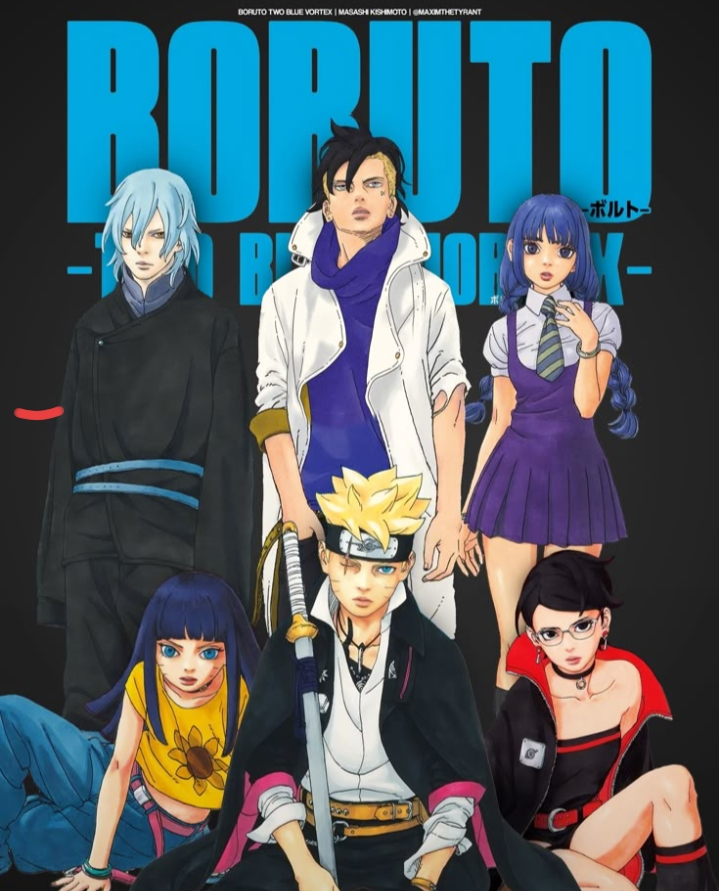

Anime
Boruto: Two Blue Vortex
1 Chapter · 2 min read
Synopsis
The official manga sequel and part two of the Boruto saga, written by Masashi Kishimoto and illustrated by Mikio Ikemoto.
Chapter 1: The Return of Boruto
The narrative begins three years after Eida’s reality-warping "Omnipotence" jutsu rewrote the memories of the entire world, reversing the lives of Boruto and Kawaki. The world now believes Kawaki is the true biological son of the Seventh Hokage, while Boruto is branded a treacherous rogue who murdered Naruto—who, alongside Hinata, remains safely sealed away in Kawaki's pocket dimension.
Having spent his exile training in secret with Sasuke Uchiha (who eventually sacrifices himself and gets trapped in a divine tree), a remarkably powerful Boruto suddenly returns to the Hidden Leaf Village to defend it from an apocalyptic invasion led by Code and his army of Rinnegan-wielding Claw Grimes.
Showing off devastating new abilities like Rasengan Uzuhiko and the Flying Raijin Technique, Boruto temporarily drives Code back, only to face a terrifying new threat: the Claw Grimes have evolved into self-aware, god-like Divine Trees (Shinju) modeled after the people they absorbed, including a clone of Sasuke named Hidari.
As allies like Sarada Uchiha and Sumire Kakei secretly work to expose Eida's lie, and Himawari Uzumaki awakens the Nine-Tails' chakra to fight back, Boruto must walk a razor-thin line—evading the obsessed Kawaki and the village forces while strategically orchestrating a way to save his master, rescue his parents, and neutralize the ultimate threat of the Shinju.